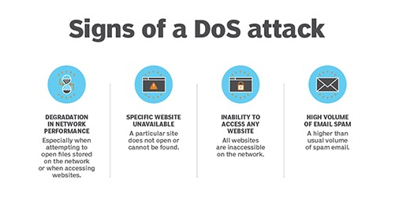

What is Denial Of Service(DOS) & How it is done?
A Denial of Service (DoS) attack is a type of cyberattack that aims to make a network resource or website unavailable to its intended users by overwhelming it with traffic or requests. The goal of a DoS attack is to disrupt the normal functioning of a system, making it unavailable to users.
There are two main types of DoS attacks:
Volume-Based Attacks: These attacks flood the target network or website with an excessive amount of traffic, using up its bandwidth and making it unavailable to other users.
Protocol Attacks: These attacks exploit vulnerabilities in the underlying protocols of a network or website, such as TCP/IP, to disrupt its normal functioning.
DoS attacks can have significant consequences, such as loss of revenue, damage to reputation, and disruption of essential services. To prevent DoS attacks, organizations can implement security measures such as firewalls, intrusion detection systems, and traffic filtering. Additionally, organizations can use distributed denial of service (DDoS) protection services, which absorb and deflect incoming traffic before it reaches the target network or website.
It is important to note that DoS attacks are illegal and can result in severe penalties, including fines and imprisonment. As such, it is crucial for organizations to take the necessary steps to protect their networks and websites against these attacks and to collaborate with law enforcement agencies to bring the perpetrators to justice.
Process :
The process of a Denial of Service (DoS) attack involves the following steps:
Target Identification: The attacker identifies a target network or website to attack.
Preparation: The attacker may gather information about the target system and identify vulnerabilities that can be exploited in the attack.
Launching the Attack: The attacker launches the DoS attack by sending a large volume of traffic or requests to the target network or website, overwhelming its capacity to handle requests and making it unavailable to other users.
Traffic Overload: The target network or website experiences a significant increase in traffic, which can result in slow response times, disconnections, and unavailability.
Impact: The impact of a DoS attack can range from minor inconvenience to significant business disruption, depending on the size and duration of the attack.
Mitigation: The target network or website may employ countermeasures to mitigate the impact of the attack, such as traffic filtering, rate limiting, or traffic redirection.
It is important to note that DoS attacks can be complex and sophisticated, and attackers may use various tactics, such as botnets, to launch the attack. As such, it is crucial for organizations to take proactive measures to protect their networks and websites against these attacks, such as implementing security controls and maintaining regular backups.
Awareness on Denial Of Service(DOS) for Post-production
- Firewalls
- Intrusion Detection Systems(IDS)
- Traffic Filtering
- Rate Limiting
- Traffic Redirection
- Network Segmentation
- Distrbuted Denial Of Service(DDOS) Protection Services
- Collaboration with Law Enforcement
- Regular Updates
Case Study :-
A real-world example of a Denial of Service (DoS) attack in the post-production industry occurred in 2018 when the post-production company Technicolor was hit by a massive DDoS attack. The attack caused widespread disruption, with the company's online services, including email and file sharing, becoming unavailable for several hours.
The attack was launched using a botnet, a network of compromised devices that can be used to launch coordinated attacks. The botnet sent a large volume of traffic to Technicolor's servers, overwhelming their capacity and making their online services unavailable.
Technicolor took immediate action to mitigate the impact of the attack and worked with their DDoS protection provider to absorb and deflect the incoming traffic. The company was able to restore normal service within a few hours, but the attack caused significant disruption and impacted their operations.
This example highlights the importance of preparing for and preventing DoS attacks, as they can have significant consequences for post-production companies, including loss of revenue, damage to reputation, and disruption of essential services. Organizations in the post-production industry should implement security measures, such as firewalls, intrusion detection systems, and DDoS protection services, to protect against DoS attacks and minimize the impact of these disruptive attacks.